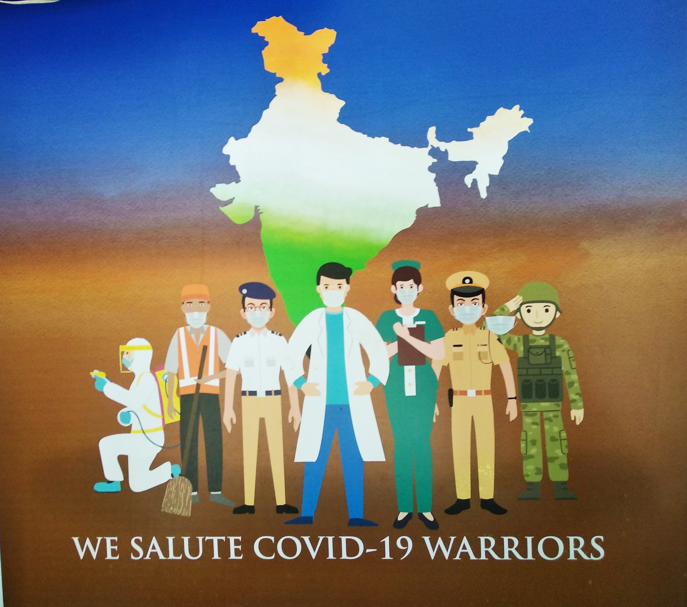

This tribute page is dedicated to the brave and selfless individuals who fought tirelessly on the front lines during the COVID-19 pandemic. Their heroic efforts and unwavering dedication have saved countless lives and brought hope to our communities.
To the doctors, nurses, and healthcare workers who risked their own well-being to care for the sick, we express our deepest gratitude. Your resilience and compassion in the face of adversity have been an inspiration to us all.
We also extend our heartfelt thanks to the essential workers who kept our communities running. From grocery store employees to delivery drivers, from janitors to public transportation workers, you kept vital services accessible while putting your own health at risk.
Let us not forget the researchers, scientists, and public health experts who worked tirelessly to develop vaccines and treatments. Their dedication to finding solutions and guiding us through these challenging times has been invaluable.
We remember and honor the lives lost to this devastating virus. The families who endured unimaginable pain and loss have our deepest sympathies. We stand in solidarity with you, united in grief and resolve.
The COVID-19 pandemic has demonstrated the resilience and strength of humanity. It has brought out the best in us, showcasing the power of unity and compassion. As we navigate the path to recovery, let us carry the lessons learned and the spirit of solidarity with us.